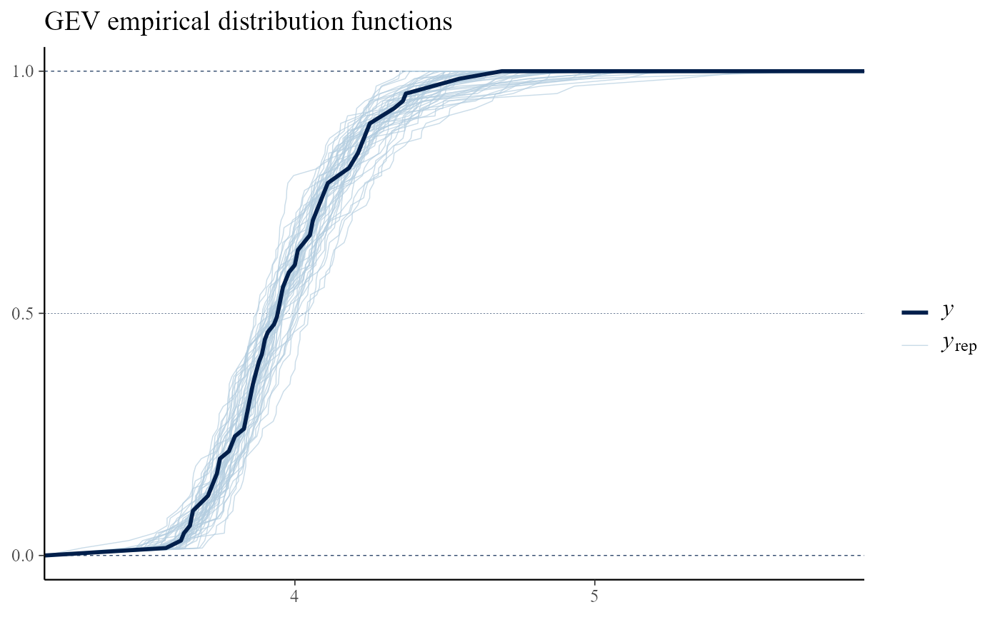
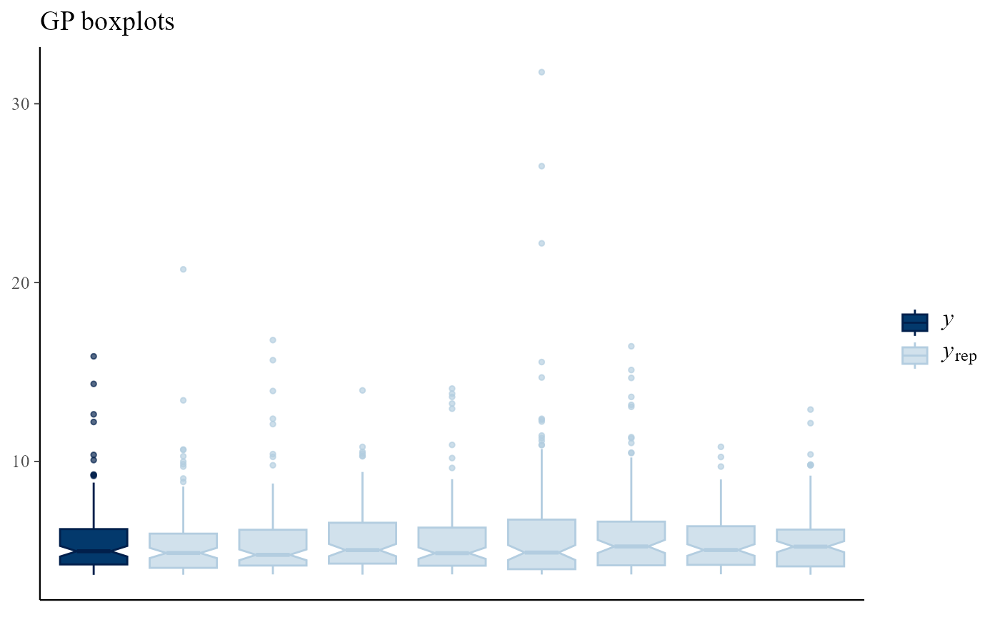
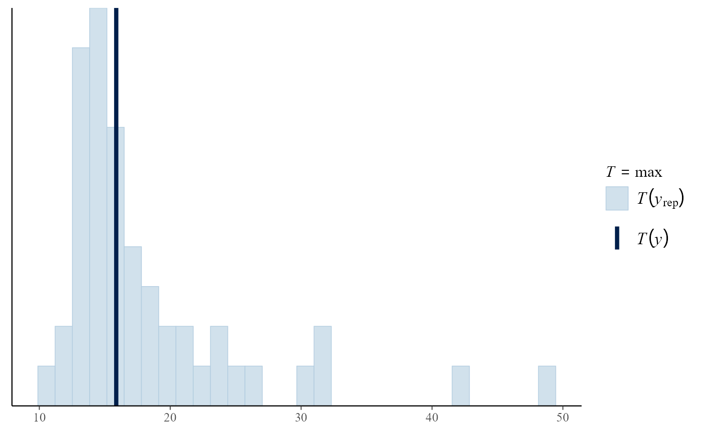
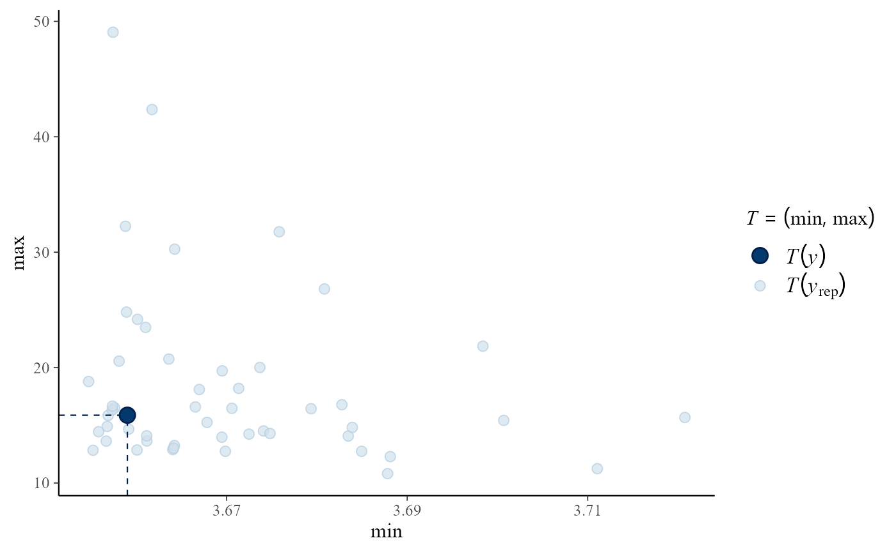
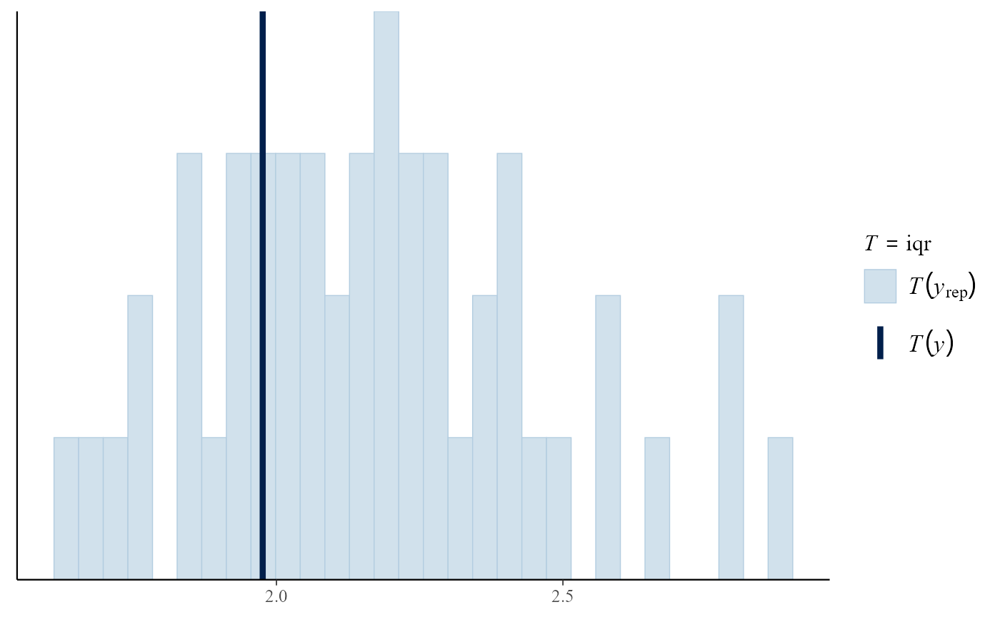

Posterior Predictive Extreme Value Inference using the revdbayes Package
Paul J. Northrop
2021-06-18
Source:vignettes/revdbayes-c-predictive-vignette.Rmd
revdbayes-c-predictive-vignette.RmdThis vignette focuses on posterior predictive inference using extreme value models. Posterior predictive inference is the prediction of unobserved variables conditional on observed data, performed by integrating parameter-specific inferences over a posterior distribution for model parameters. In practice, the integration averaging is performed using an empirical average based on samples from the posterior distribution. The vignette Introducing revdbayes covers the sampling from extreme value posterior distributions and the vignette Faster simulation using revdbayes considers how to do this more quickly.
We consider two uses of posterior predictive inference. In the first we simulate from the posterior predictive distribution many replicates of the observed data. A comparison of these replicates to the observed data provides a way to assess the fit of the model: systematic differences in behaviour between the observed and replicated data suggest features of the data that are not represented well by the model. For greater detail see Chapter 6 of Gelman et al. (2014). Secondly, we define as the variable of interest the largest value \(M_N\) to be observed over a future time period of length \(N\) years and estimate under the extreme value model the conditional distribution of \(M_N\) given the observed data. This accounts for uncertainty in model parameters and for uncertainty owing to the variability of future observations.
We illustrate the code used to perform these two tasks using the portpirie and gom datasets that feature in the vignette Introducing revdbayes.
We produce posterior samples for later use. The argument nrep = 50 to rpost results in 50 simulated replicates of the data being returned in object$data_rep.
### GEV model for Port Pirie Annual Maximum Sea Levels
data(portpirie)
mat <- diag(c(10000, 10000, 100))
pn <- set_prior(prior = "norm", model = "gev", mean = c(0,0,0), cov = mat)
gevp <- rpost(n = n, model = "gev", prior = pn, data = portpirie, nrep = 50)
### GP model for Gulf-of-Mexico significant wave heights
data(gom)
u <- quantile(gom, probs = 0.65)
fp <- set_prior(prior = "flat", model = "gp", min_xi = -1)
gpg <- rpost(n = 1000, model = "gp", prior = fp, thresh = u, data = gom, nrep = 50)Posterior predictive model checking
The pp_check method pp_check.evpost provides an interface to the posterior predictive checking graphics available in the bayesplot package (Gabry and Mahr 2017). For details see the bayesplot vignette Graphical posterior predictive checks. bayesplot functions return a ggplot object that can be customised using the gglot2 package (Wickham 2009).
library(bayesplot)
#> This is bayesplot version 1.8.0
#> - Online documentation and vignettes at mc-stan.org/bayesplot
#> - bayesplot theme set to bayesplot::theme_default()
#> * Does _not_ affect other ggplot2 plots
#> * See ?bayesplot_theme_set for details on theme setting
library(ggplot2)We show three examples of the graphical posterior predictive checks that are available from bayesplot.
Overlaid density and distribution functions
Calling pp_check with type = "overlaid" produces plots in which either the empirical distribution functions or kernel density estimates of the observed and replicated data are compared. If the model fits well then the observed data should look like a typical replication from the posterior predictive distribution, which seems to be the case here.
# GEV
pp_check(gevp, type = "overlaid") + ggtitle("GEV empirical distribution functions")
pp_check(gevp, type = "overlaid", subtype = "dens") + ggtitle("GEV kernel density estimates")
Multiple plots
Using type = multiple produces multiple plots, rather than overlaid plots, with subtype indicating the type of plots to be drawn. By default only 8 plots of replicated data are drawn, but this can be changed using the nrep argument. Again, the plot of the observed data is not obviously different from those of the replicated data.
pp_check(gpg, type = "multiple") + ggtitle("GP kernel density estimates")
pp_check(gpg, type = "multiple", subtype = "boxplot") + ggtitle("GP boxplots")
Posterior predictive test statistics
The default setting for pp_check is to produce a plot that compares the values of test statistics for the observed and replicated data. The argument stat defines the test statistic (or a pair of test statistics) to use, using either the name of a standard function or a user-defined function. For a model that fits well the value of the statistic calculated from the observed data should not be unusual compared to the values calculated from the replicated data. In this example, the plots do not suggest clear lack-of-fit.
pp_check(gpg)
#> `stat_bin()` using `bins = 30`. Pick better value with `binwidth`.
pp_check(gpg, stat = "max")
#> `stat_bin()` using `bins = 30`. Pick better value with `binwidth`.
pp_check(gpg, stat = c("min", "max"))
iqr <- function(y) diff(quantile(y, c(0.25, 0.75)))
pp_check(gpg, stat = "iqr")
#> `stat_bin()` using `bins = 30`. Pick better value with `binwidth`.
Posterior predictive extreme value inference
Posterior predictive inferences for the largest value \(M_N\) to be observed over a future time period of length \(N\) years is performed by the predict method for the objects of class evpost returned from rpost. Objects returned from predict.evpost have class evpred. The plot method for these objects produces graphical summaries of the output from predict.
To perform predictive inference about \(M_N\) we need to provide, or assume, information about the timescale covered by the data. To do this we need to supply the mean number npy of non-missing observations per year, either in the call to rpost or the call to predict. For the GEV and OS models it is often the case that the input data are annual maxima, so npy = 1 is the default value if npy is not supplied. For the PP model a similar assumption is made: see the documentation for predict.evpost for details. For the binomial-GP model (note that we need the binomial part in order to account for the rate at which the threshold is exceedance) npy must be provided by the user.
Let \(F_{M_N}(z; \theta)\) denote the distribution function of \(M_N\) conditional on the parameters \(\theta\) of an extreme value model and let \(\pi(\theta \mid x)\) be the posterior distribution of \(\theta\) given the observed data. Then, if we assume that given \(\theta\) future observations are independent of the data \(x\) then posterior predictive distribution function of \(M_N\) given only the data \(x\) is given by \[ P(M_N \leqslant z \mid x) = \int F_{M_N}(z; \theta) \, \pi(\theta \mid x) {\rm ~d}\theta. \] We estimate \(P(M_N \leqslant z)\) using \[ \hat{P}(M_N \leqslant z \mid x) = \frac1m \sum_{j=1}^m F_{M_N}(z; \theta_j), \] where \(\theta_j, j=1, \ldots, m\) is a sample from the posterior distribution \(\pi(\theta \mid x)\).
The form of \(F_{M_N}(z; \theta)\) depends on the extreme value model. The GEV, OS and PP models are each parameterised by the location, scale and shape parameters of a GEV distribution. Let \(G(z; \theta)\) be the GEV distribution function for an annual maximum under a given such model, after appropriate adjustment for the value of npy. Then, \(F_{M_N}(z; \theta) = G(z; \theta)^{N}\). For the binomial-GP model, provided that \(z\) is the greater than the threshold \(u\), \(F_{M_N}(z; \theta) = F(z; \theta)^{n_{py} N}\), where \(n_{py}\) is the value of npy and \[ F(z; \theta) = 1-p_u \left\{1+\xi\left(\frac{z-u}{\sigma_u}\right)\right\}^{-1/\xi}. \] See Northrop, Attalides, and Jonathan (2017) for greater detail.
We repeat the posterior simulation for the Gulf-of-Mexico example, changing model = gp to model = bingp in the call to rpost to add inferences about the probability of threshold exceedance based on a binomial distribution.
### Binomial-GP model for Gulf-of-Mexico significant wave heights
data(gom)
u <- quantile(gom, probs = 0.65)
fp <- set_prior(prior = "flat", model = "gp", min_xi = -1)
bp <- set_bin_prior(prior = "jeffreys")
# We need to provide the mean number of observations per year (the data cover a period of 105 years)
npy_gom <- length(gom)/105
bgpg <- rpost(n = 1000, model = "bingp", prior = fp, thresh = u, data = gom,
bin_prior = bp, npy = npy_gom, nrep = 50)Posterior predictive density and distribution functions
We plot, for the analyses of the portpirie (GEV) and gom (binomial-GP) datasets, the estimated posterior predictive density functions and distributions functions of \(M_N\) for \(N = 100\) and \(N = 1000\). The argument n_years gives the value(s) of \(N\).
# GEV (Portpirie)
plot(predict(gevp, type = "d", n_years = c(100, 1000)), cex = 0.7)
plot(predict(gevp, type = "p", n_years = c(100, 1000)), cex = 0.7)
# binGP (Gulf-of-Mexico)
plot(predict(bgpg, type = "d", n_years = c(100, 1000)), cex = 0.7)
plot(predict(bgpg, type = "p", n_years = c(100, 1000)), cex = 0.7)As one would expect there is greater uncertainty for \(N=1000\) than for \(N=100\). In making inferences over a period of length 1000 years a large degree of uncertainty is to be expected. For the Gulf-of-Mexico data in particular, this results in appreciable probability on values of significant wave height thought by experts to be physically unrealistic.
Posterior predictive intervals
The default setting for predict.evpost is to estimate posterior predictive intervals for \(M_N\). In addition to n_years we can specify the probability level level of the interval(s), that is, the estimated probability that \(M_N\) lies within the interval. Two types of interval can be calculated. One is an equi-tailed interval in which the estimated probability that \(M_N\) lies below the lower limit of the interval is equal to the estimated probability that \(M_N\) lies above the upper limit of the interval. Typically, there will exist intervals of the required probability level that is shorter than the equi-tailed interval. predict.evpost can search for the shortest such interval. If the estimated posterior predictive distribution is unimodal then this interval is the highest predictive density (HPD) interval, with the property that at all values inside the interval the estimated posterior predictive density is greater than at all values outside the interval. If hpd = FALSE then only equi-tailed intervals are returned. If hpd = TRUE then both types of interval are returned.
The plot.evpred method plots the estimated posterior predictive intervals for each value in n_years and each level in level. The argument which_int controls which of the two types of interval are included. The dashed lines give the HPD intervals and the solid lines the equi-tailed intervals. Each line is labelled by the level of the interval.